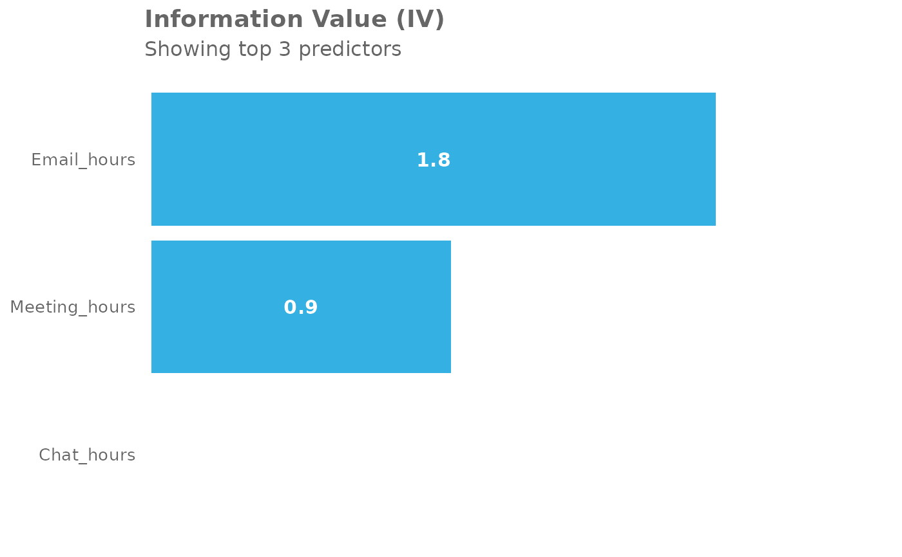

This function calculates the Information Value (IV) for the selected numeric predictor variables in the dataset, given a specified outcome variable. The Information Value provides a measure of the predictive power of each variable in relation to the outcome variable, which can be useful in feature selection for predictive modeling.
Usage
create_IV(
data,
predictors = NULL,
outcome,
bins = 5,
siglevel = 0.05,
exc_sig = FALSE,
return = "plot"
)Arguments
- data
A Person Query dataset in the form of a data frame.
- predictors
A character vector specifying the columns to be used as predictors. Defaults to NULL, where all numeric vectors in the data will be used as predictors.
- outcome
String specifying the column name for a binary variable, containing only the values 1 or 0.
- bins
Number of bins to use, defaults to 5.
- siglevel
Significance level to use in comparing populations for the outcomes, defaults to 0.05
- exc_sig
Logical value determining whether to exclude values where the p-value lies below what is set at
siglevel. Defaults toFALSE, where p-value calculation does not happen altogether.- return
String specifying what to return. This must be one of the following strings:
"plot""summary""list""plot-WOE""IV"
See
Valuefor more information.
Value
A different output is returned depending on the value passed to the return
argument:
"plot": 'ggplot' object. A bar plot showing the IV value of the top (maximum 12) variables."summary": data frame. A summary table for the metric."list": list. A list of outputs for all the input variables."plot-WOE": A list of 'ggplot' objects that show the WOE for each predictor used in the model."IV"returns a list object which mirrors the return inInformation::create_infotables().
Details
This is a wrapper around wpa::create_IV().
Examples
# Return a summary table of IV
pq_data %>%
dplyr::mutate(X = ifelse(Internal_network_size > 40, 1, 0)) %>%
create_IV(outcome = "X",
predictors = c("Email_hours",
"Meeting_hours",
"Chat_hours"),
return = "plot")

# Return summary
pq_data %>%
dplyr::mutate(X = ifelse(Internal_network_size > 40, 1, 0)) %>%
create_IV(outcome = "X",
predictors = c("Email_hours", "Meeting_hours"),
return = "summary")
#> Variable IV
#> 1 Email_hours 1.289015
#> 2 Meeting_hours 1.289015